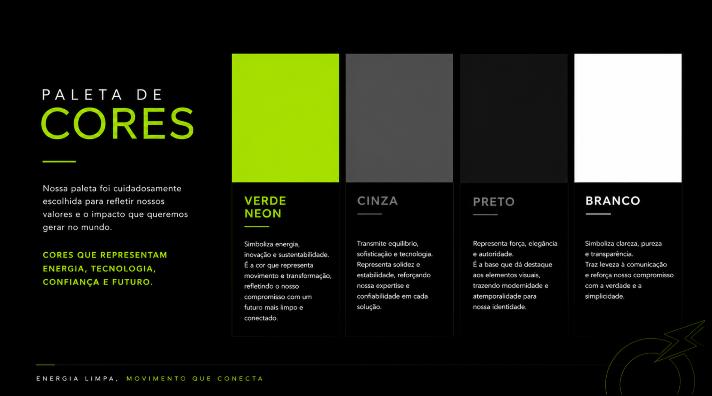

Uma identidade criada para traduzir conexão, tecnologia e mobilidade sustentável em uma marca forte, direta e reconhecível.
LOC Solar atua no encontro entre energia renovável e mobilidade elétrica. A identidade precisava expressar tecnologia sem perder clareza e personalidade.
Localização. Energia. Conexão. Três ideias reunidas em um símbolo único.
A paleta combina tons escuros e verdes para transmitir tecnologia, confiança e sustentabilidade. O verde-lima funciona como ponto de energia e destaque.

A linguagem visual foi pensada para funcionar em pontos de recarga, sinalização, equipamentos e comunicação digital.